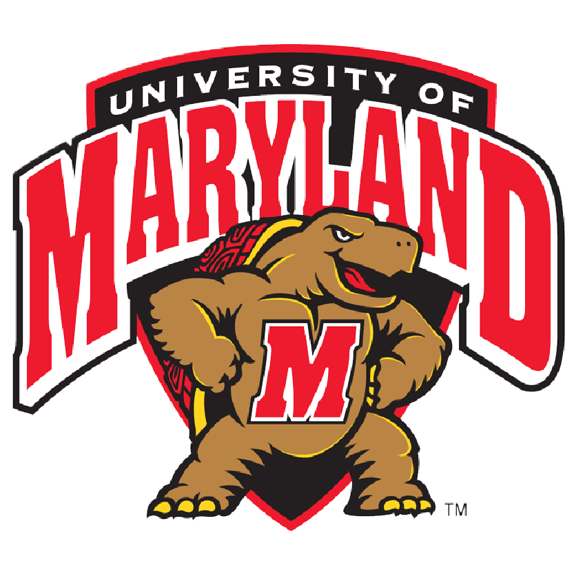

Eric Le


My professional goal is to have a career as a UX Designer is to use simple language: short sentences, simple vocabulary, and readable structure with careful visual crafting. If long text is absolutely necessary, make sure the format is visually digestible, interesting, and engaging. And never underestimate the power of a good font.
Work History
- Math/Computer Science Tutor
- Help and tutor students in math courses in Intermediate Algebra, Precalculus, Calculus I, Calculus II, Calculus III, Linear Algebra, and Differential Equationss
- Help and tutor students in computer science courses such as Java, HTML, C++, and Discrete Structure
- Montgomery College Enactus Vice President
- Help raising funds within 5 days for the funding project such as Macklin Water Project, Houston Relief Efforts, and other MC Enactus funding project.
- Assisted to help out on other funding project such as Raptor Tank, Our Stories, One Hen, One Heart and Food for Life
- NASA Swarmathon Participant
- Collaborated with a team of engineers and computer science major to prepare a movement algorithm in C++ programming language for virtual rovers designed to collect small cubes and gather them in a central hub